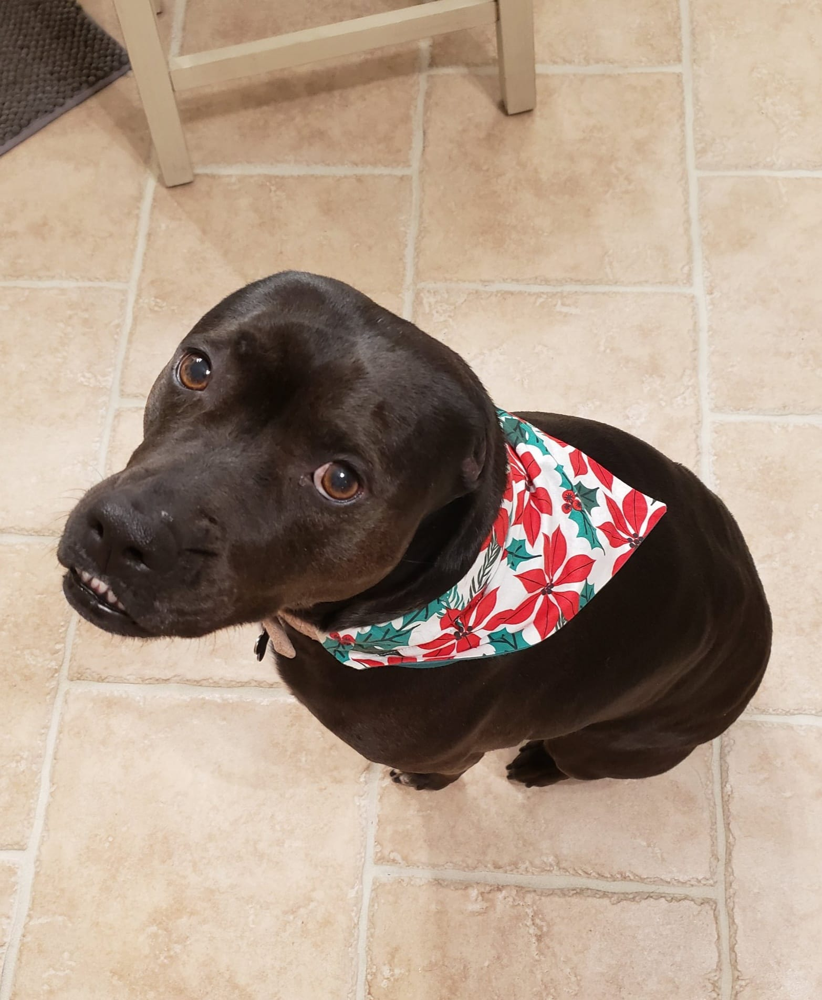
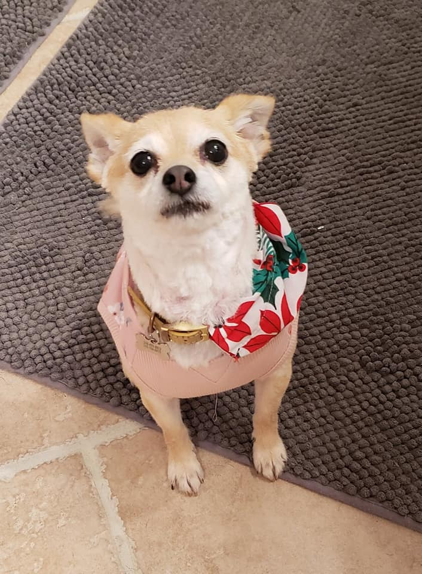
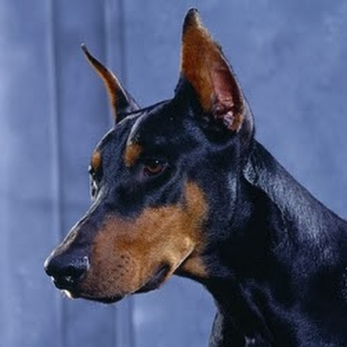

Hopey
Rescued in Texas, Hopey found her forever home after becoming part of the family.
The person behind the mobile salon
I’ve been grooming for about 12 years, and caring for dogs has been a part of who I am for as long as I can remember.
I started as a dog bather and quickly fell in love with the craft: breed-specific haircuts, learning dog body language, and all the snuggles in between. I love dogs’ different personalities, quirks and incredible loyalty.
After living in Texas for 10 years, my family returned to Michigan in 2018 to be closer to the people we love. I’m grateful to the clients who helped this small business get started, and I look forward to caring for your fuzzy friend as if they were my own.
My own dogs have taught me how much patience, compassion and joy animals bring to a home. They’re a big part of why I do this work.
Say hello
My favorite coworkers

Rescued in Texas, Hopey found her forever home after becoming part of the family.

Lala started as a wary visitor in the backyard and eventually made herself right at home.

Our beloved Doberman, Toby, passed in 2018. His gentle spirit still inspires the way I care for dogs.